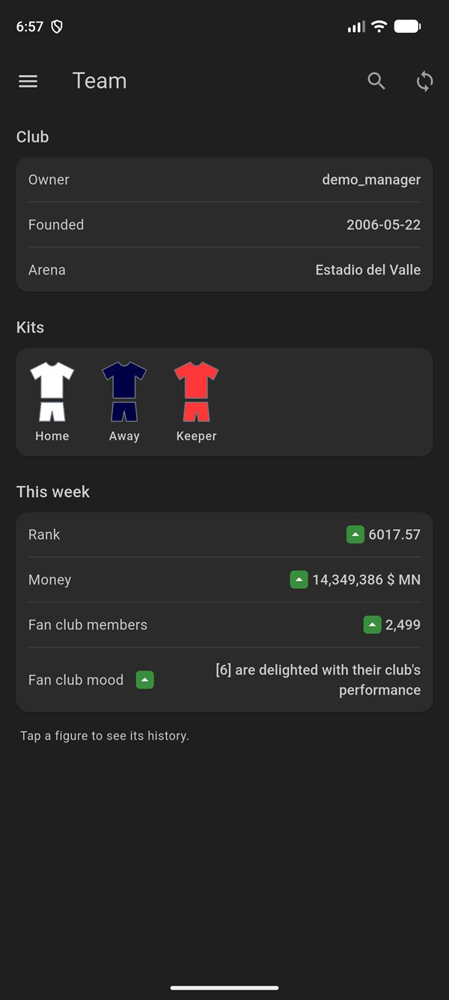
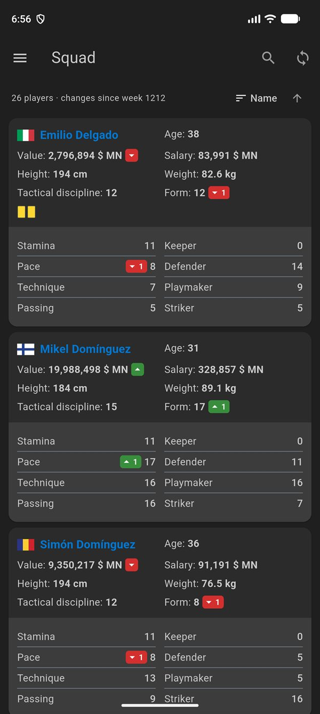
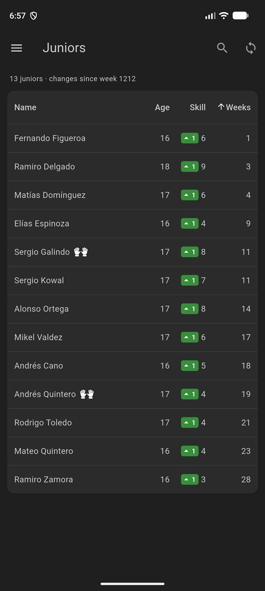
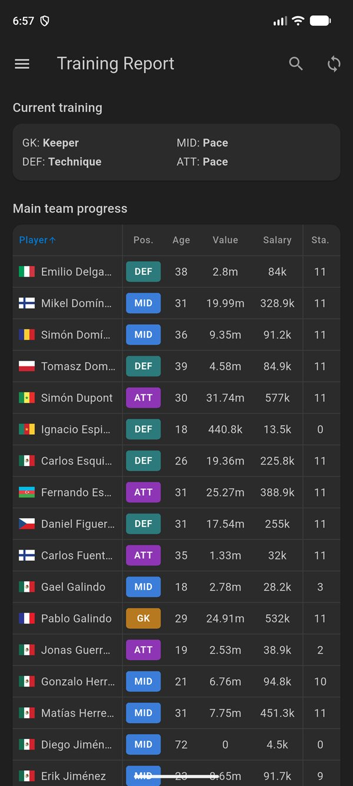

Features
Everything Sokker shows you, remembered week by week.
Sokker shows you this week. Sokkermetrics keeps every sync, so you can compare, sort and chart how your club changes over the season.
Squad
Player cards with every skill, its change since last week, value and salary in your currency, flags, injuries and cards. Sort, reverse and expand.
Skill history
Scrollable charts of every skill over the weeks, for players and juniors, so you can spot a pop or a stall at a glance.
Juniors
A sortable table of your youth school with weeks left and skill progress, and a chart of each junior’s growth.
Training Report
One table with the main team’s progress per week and skill, so you can see what each training session delivered.
Trainers
Your coaching staff and their skills, side by side, with the trainer shown on each player card.
Team
Club details, kits, owner and supporter mood, and the weekly figures, in one place.
Former Players
Players and juniors who left your club stay in your history, with their last known skills.
Search
Find any player or junior by name, current or former, in one search.
Backups
Back up your history to a file or Google Drive, and restore it on a new phone.
Screenshots
See it in action.
A look at the main views, with every change since the last sync marked in green or red.
-

TeamClub, kits and weekly figures -

SquadEvery player and skill change -

JuniorsYouth school progress -

Training ReportWhat training delivered
How it works
Up and running in a minute.
No extra account and no server in between: the app talks straight to Sokker.
Log in with Sokker
Use your sokker.org username and password. Tick Remember me to sync with one tap later.
Sync every week
Each sync saves a snapshot of your squad, juniors, trainers and training on your phone.
Watch the trends
Compare weeks, chart skills, sort tables and keep track of everyone who has played for you.
Privacy
Your team data stays with you.
Sokkermetrics has no server of its own. Your login and your history live on your device, and backups only go where you send them.
Read the full privacy policy →- Your Sokker login is sent only to sokker.org and kept in your phone’s secure storage.
- Your synced data is stored in a database on your device.
- Google Drive backups are saved in a private folder that only Sokkermetrics can use. The app cannot see or change any of your other Drive files.
FAQ
Questions
Is Sokkermetrics an official Sokker app?
No. It is an independent companion app that uses Sokker’s public XML interface. It is not affiliated with or endorsed by Sokker.
Does it cost anything?
No. The app is free and shows a small banner ad at the bottom of the screen.
How often should I sync?
Once a week, after training, is enough to build the history. Syncing more often does no harm.
Can I move my history to a new phone?
Yes. Back up to a file or to Google Drive in Settings, then restore it on the new phone.
Is it available for iPhone?
Not yet. Sokkermetrics is available for Android.